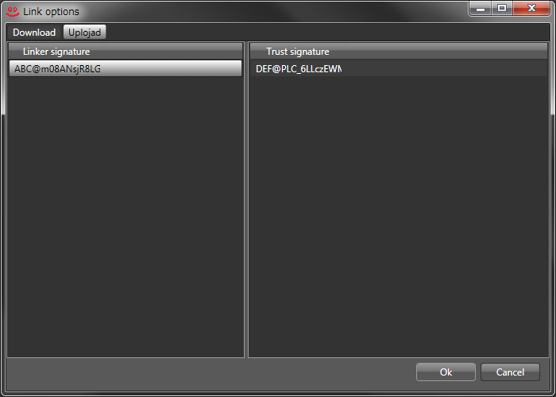

LinkはStoreのサインリストを集めたデータです。そのサインリストを元にAmoebaがStoreをダウンロードし、"Search"タブに反映させます。
メニューの"Core>Link options>Download"でダウンロードしたいリンカのサインを"Paste"し、しばらくするとリンカがトラストしたサインが見えます。
始めに、メニューの"View>View options>Signature"でサインを設定してください。

メニューの"Core>Link options>Upload"でリンカサインに登録したいサインを追加します。そしてトラストサインを追加し、"Ok"をクリックしてウインドウを閉じるとLinkがアップロードされます。
